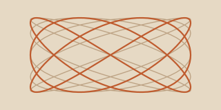
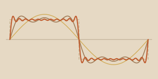
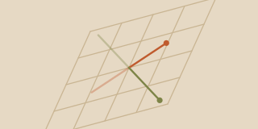
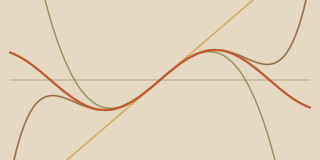
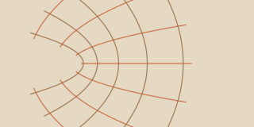
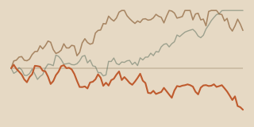

Index
1 published · 5 planned-

Lissajous Curves
What happens when two perpendicular oscillations meet. Rational frequency ratios close into knots; irrational ones never repeat.
-

Fourier Series
Building a square wave out of nothing but sines, and watching Gibbs' overshoot refuse to go away.
-

Eigenvectors
The directions a linear map leaves alone. Drag the matrix and watch the invariant axes move.
-

Taylor Approximations
Each added term buys a little more accuracy, and only near the point you expanded around.
-

Conformal Maps
Complex functions as distortions of the plane — bending every line while preserving every angle.
-

Random Walks
Individually unpredictable, collectively lawful. Where the square-root-of-time scaling comes from.